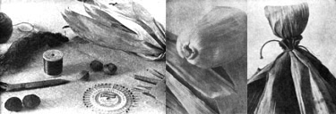

The cornhusk doll is a piquant example of how much can be done with practically nothing. When you look at one of the creations-a demure little lady in full-skirted costume, perhaps, with a household tool in her hand-it's sometimes hard to believe she was entirely hand-shaped, with the help of a bit of string and wire, from the crackly shucks which harvest leaves behind to rustle in the autumn wind.
This kind of dollmaking is an absorbing pastime right from the start. The raw materials are fun to gather and a pleasure to work with (wet cornhusks drape just like fabric). And, since most of the makings cost nothing, you can feel free to use them generously in all kinds of experiments. You'll discover that creativity comes easily when you don't have to worry about wasting a lot of expensive findings.
For this reason, the making of cornhusk dolls is a good craft for children. The young'uns can create their own versions-and be assured of pleasing results from their efforts while you work on yours. A lot of scrapcraft for kids is schlock . . . but this project is the real thing, an age-old folk art that's fun to play around with today.
We've found dollmaking a good way to bypass the stores and create gifts from our own land . . . but we've kept some of the masterpieces we've made, too. In fact, our doll population grows each year as one or another of us creates a character we simply must make room for. If only we could put them all to work sweeping out the kitchen!
On the other hand, even though the cornhusk people don't help us with the chores, they do make themselves useful in another way: as a source of extra cash. We've found a ready market for our dolls and could sell more if we had the time to make them. If you enjoy the craft as much as we do, I dare say that a month of winter evenings devoted to playing with shucks may net you enough to feed your animals for weeks on end, buy a grain mill, or even invest in a milk goat. All that from what the picker leaves behind!
Would you like to try your hand at a doll or two? I'll gladly tell you how we make ours . . . not the way to construct them, mind, but a way, the one we're using now. Next year our technique may change if we discover new possibilities in the medium. In fact, who knows what new wrinkles you yourself may create, once you get started!
First, gather your husks . . . ideally on a bright, blue and gold autumn day soon after the dogwoods have turned red. We grow a small plot of field corn to feed our pigs, and put our dollmaking materials by during October as we handpick the crop.
If you don't raise corn yourself, however, no matter. On big farms where the grain is harvested by machine, the empty husks litter the field just ask a neighbor if you may pick up a bagful. (Although most farmers are happy to let you help yourself to such "waste", they appreciate your courtesy in asking permission.)
The husks you collect should be dry, not green, and will last for years if kept free of moisture. Any that are spotted with mildew can be bleached in a solution of Clorox and water . . . though the treatment may make them a bit more brittle than unbleached wrappings.
Discard the coarsest parts of the outer husk (which are likely to be discolored and wind-shredded). The goats may eat these leavings . . . and if not, the rejects make good livestock bedding. What remains is a many-layered wrapper, some parts of which should be sorted out and put aside for special purposes.
One of the beauties of an earth craft like this is that it leads you to notice the marvelous way in which nature's products are put together. See, for example, how the cornhusk is "gathered" around the stalk, so that it flares from the stem's small diameter to the plumpness of the rounded ear?
Carefully tease away the ample outer pieces of husk from the stalk (some will tear, but can still be used), and save the fullest, heaviest, and cleanest for the doll's skirt. Also select the lighter-weight, silkier, but still flared portions from the inner layers of the husk. These will come in handy as sleeves. Especially clean and pliable-yet opaque bits of shuck make good faces for cornhusk people, and corn silk does well as hair.
Remove all the husk from about five ears of corn, to give you plenty of material to choose from as you construct your first doll. And remember that many parts of the creation won't require any special formation of corn shuck (and, therefore, can be put together from what's left over after you've set aside the choice bits).
Next, gather the few other findings you'll need:
[1] Lightweight string, crochet cotton, or whatever similar cord you have on hand or can get inexpensively. Color isn't important.
[2] Tan, ivory, or other "cornhusk colored" sewing thread to tie the parts of the doll that will show when finished.
[3] Wire or pipe cleaners.
[4] A base for the doll's head. Possibilities include acorns, hickory nuts, black walnuts, beads from old jewelry, or recycled styrofoam balls 1 inch or a shade larger in diameter.
[5] Straight pins.
[6] White casein glue.
When you're ready to work on your first "little person", pour lukewarm water into, the sink, a pan, or a shallow basin and soak the shucks for a few minutes to soften them. Any you don't use at once can be left to air dry and put away for another time.
Next, choose a comfortable, well-lit location, and place a folded bath towel on your work surface to absorb moisture from the husks during handling (unless you especially enjoy the sensation of cool water dripping down to your elbows).
According to our method, cornhusk dolls are made head first. Select a long, thin piece of husk-(about 1-1/2 by 5 or 6 inches)-and form the ribbon tightly around whatever base you're using. (Don't worry about the uncovered sides of the head . . . they'll be concealed by a bonnet.) Pinch the two free ends together at the neck and tie them firmly with lightweight string. The excess length of shuck should be left trailing below the fastening to help attach the head to the body.
The doll's body is made from 12 to 15 pieces of husk which are each 2 to 3 inches wide at one end and taper to a point at the other . . . a natural formation that lends itself well to this purpose. Since further covering will be added later, you needn't be concerned about small imperfections in the material.
Pick up the dozen or so chosen pieces by their narrow ends and arrange the tips around the ribbons of shuck that dangle below the head. (Placing the tapered ends at the neck helps to avoid bunchiness there.) Tie the bundle of pointed husks together with string, as far up and close to the head as is compatible with a secure knot. Usually I wrap the string around twice to give me a good tight pull.
You now have a tent-like body of husks tied at the narrow end and topped by a head. Looks awful, doesn't it? Cheer up, it'll get worse before it gets better.
Cut a 6-inch piece of wire or pipe cleaner. This one continuous length will form both arms, with a hand at each end.
Place the wire on a piece of husk which measures about 1-1/2 by 6-1/2 inches, and roll the shuck around the metal core. When this step is almost finished, fold the outer ends of the wrapper in over the tips of the wire and then complete the roll. Tie the covering with tan thread (doubled) at the wrists and in the center. There now, that wasn't hard, was it?
To form the sleeves, you'll take advantage of the cornhusk's natural shape at the point where it was attached to the stalk. Choose a flared piece, not too stiff, about 1-1 /2 inches wide at the narrow "gathered" end, 3-1/2 inches wide at the opposite end, and 2-1/2 inches long. The idea is to fasten this covering around the arm at the wrist, tie it on in the reverse of its final direction, and turn it back to form a puffed effect. (For a "rolled-up-sleeves" look you'd attach the piece at the elbow rather than at the wrist.) This is a tricky maneuver, but accounts for much of the doll's charm.
All set? Place the hand end of the wrapped wire arm on the gathered edge of the sleeve, so that it extends about 1/2 inch onto the piece of husk. Then wrap the "gathers" around the arm with an overlap of no more than 1/2 inch and tie the sleeve tightly at the wrist (with several turns of string and a firm knot).
You now have a bare arm with a sleeve which is tied on at the wrist and which extends out over the hand. You're ready to carefully turn the covering back-as if it were fabric-both to expose the hand and to form a nice puffy peasant-blouse look. Once it's been folded back,, you can tie the open end of the sleeve to the arm near the center of the length of wire.
The other sleeve is made in the same way . . . and there's no need to worry if the two don't look just alike. When the arms are attached to the body, their coverings will tend to even out. And, anyway, real people aren't all that symmetrical either.
OK, you've just completed what I consider the most difficult step in making a cornhusk doll. If you've gotten this far, you can do the rest. The little lady still doesn't look like much, but she'll shape up fast from here on in.
Now the doll begins to hang together. Take the sleeved armpiece and thrust it firmly as far up under the head as it will go, so that half the body husks fall in back and half in front.
Then firmly tie a length of string around the torso just under the arms to form a high waist.
The next step is to smooth out the bodice and you'll no doubt work out your own favorite way to do this. Meanwhile, here's mine: Choose several long, thin strips of husk that are each about I inch wide. Hold one with your thumb at the left front of the doll's waistline, cross the band over her right shoulder, and hold its end down at the back. Wrap the next strip from the right front, up over the left shoulder, and down to the right side of the back. Continue alternating such strips until the bodice is well built up. Although stained husks can be used for the under layers, the two final pieces of shuck should be unblemished. Tie a string around the waist to keep the wrappings in place.
At this point there are a lot of long-usually too long-pieces of husk flapping about below the waist. Whack them off with strong scissors so that the doll will stand about 6 to 7 inches tall. (When I made my first cornhusk people I left them taller than that, with a resulting El Greco, wraith-like quality. Now I bring them down to earth a bit more. The choice is yours.)
The doll's skirt is treated in much the same way as the sleeves: tied on in the reverse of its final direction and pulled down to produce a full effect, with the rough edge hidden under the bouffant gathers.
Choose two of your widest, cleanest pieces of flared husk to form the front and back of the skirt. (if you're short of wide material, you can add an extra section to cover the gap at each side.) Tie on the front first, with the gathered (narrow) end at the waist and the wider part extending up over the doll's face. Then fasten the back panel in the same way, so that it slightly overlaps the first (front) one. Once you've made a few cornhusk gals you may want to attach both sections in one operation, but you'll find it easier at the outset to proceed as I've suggested. And don't worry about all that string bunched around your little lady's waist . . . it helps to keep her together.
Your doll now appears to be standing on a hot air register with her skirt flipped up over her head. Gently turn back the two parts of the garment, one at a time, so that they fall as they should. Then find a long, thin strip of scrap husk and pin it loosely around the bottom of the skirt-without actually piercing the "fabric"-to hold the pieces in position while they dry.
Remember that corn silk you saved? Select a small hank (about as much as you'd get from one ear of corn), tie a piece of thread around the center of the bundle, dunk the silk in water, and lift it out at once. Then drape the wet wig over your lady's head and use a straight pin to anchor it to the husk covering until it dries. You can let the hair hang down the doll's back, form it into a bun, or make a separate braid (which you tie on around the neck before adding a cap) and tuck the rest under the bonnet.
A becoming bonnet will cover the sides of the cornhusk lady's head and help keep her hair in place. Choose a good clean piece of husk about 2 by 3 inches and wrap it from shoulder to shoulder over the head, holding it together at the neck. At this point, of course, the cap material will be sticking straight out behind the doll . . . so you should hold her in your left hand-with the headgear still, pinched together under her chin-and with your right hand crease the "fabric" (as if you were wrapping a package) to fit the back of the doll's head. You can put a pin in each side of the bonnet, if you wish, to hold it in place while you form and tie it. A bow for the front or back can be made from a wisp of husk (measuring about 1/8 by 4 inches) and attached at this time.
The following extras are pleasant finishing touches for cornhusk dolls:
Apron. A protector for the tidy housewife's dress can be made from a piece of flared husk about 2 by 2 or 2 by 3 inches. Such a garment is fastened on just as the skirt was: positioned with the gathered edge at the waistline and the wider part extending up over the bodice . . . then tied, and flipped down. I've seen dolls wearing aprons of the dark red husk from Indian corn, and others with fancy calico jobs.
Broom. Pampas grass seed heads make good brooms . . . or try tying pine needles or thin dried grass to a small twig. A somewhat heavier sweeping tool can be made from a dried corn tassel. Look around your yard, hedgerow, or woods for other possibilities.
Churn. Start with the dasher-a thin stick-and roll a 2-inch-wide piece of husk around it to a thickness of about 5/8 inch. Tie the wrapping near both ends. Then cut a husk ribbon 1-1/4 inches wide and continue to wrap the barrel, this time just at the lower end, until it reaches a thickness of about 1 inch. Again fasten the roll near both its top and bottom. Tie or glue the dasher to the doll's hand, or leave the churn freestanding.
Bread. It's fun to pose your doll with her hands offering a loaf of homemade bread. Next time you bake, set aside a small lump of dough about the size of a golf ball. Divide this into nine parts, roll each into a thin rope, and braid three tiny loaves of three strands each . . . or just bake the dough into a miniature round loaf.
Bucket. Find a 1 -inch high tapered cork to serve as a form, wrap a small piece of wet husk around it, and tie the cornshuck in two places with thread. Let the husk dry on the cork. When you remove the form, touch the edges of the bucket with glue and also dab adhesive on the thread binding to hold it in place.
To give the bucket a bottom, cut a circle slightly larger than the diameter of the pail at its smaller end and notch its edges with scissors. Spread white glue around the inner edge of the container's wall where the bottom is to fit, and push the disc of husk down into position with the eraser tip of a pencil.
Finally, the handle: Braid three thin strands of husk, tie the ends of the plait with thread, and glue them to the bucket. Loop the bail over the doll's hand.
Knitting. Use two round toothpicks as needles, and cast on about 12 stitches of lightweight string or wool. Knit an inch or so. Then wrap the end of the "yarn" into a small ball and glue the last few strands around the bundle to prevent unraveling. Tie the work to the doll's hands and let the ball of wool fall to the "floor" or dangle partway down.
A great deal of the fun offered by this craft comes from modeling sticks, twigs, weeds, and wild findings into tools for your little people. I'm sure you'll think of other touches to add to your dolls: various objects for them to hold, different poses for them to assume. There's plenty of scope for imagination. Go ahead, play with the husks, discover their possibilities . . . and yours.
After a bit of practice and family fun with dollmaking, you might want to try selling some of your better efforts . . . both as a source of extra cash and as a marvelous excuse to turn out still more cornhusk people. In that case, the following hints may be useful to you.
Cornhusk dolls can be sold through a wide range of outlets: farm market stands, fruit growers' sheds, country stores, gift shops, craft fairs, natural food stores, antique dealers, and interior decorators.
Some shop owners are glad to take articles on consignment (an arrangement by which the dealer pays you when the piece is sold and retains a commission of 20 to 30 percent for himself). Others will buy items outright. Although I've sold crafts both ways, I find that the consignment system is most commonly used and often leads to repeat sales. If your creations move well, the merchant is usually just as pleased as you are.
While you're thinking about outlets, don't overlook the possibility of selling from your own house. A woman in a small town near us keeps her kitchen window, overlooking a narrow street, filled with homey-looking arrangements of the articles she makes. People watch for her changing displays, and she enjoys a steady stream of small but regular sales (and many special orders).
You'll offer only your best work for sale, of course . . . but even so, the way in which your dolls are presented may have a lot to do with how many find homes. That is, your wares will look more appealing if they're neatly laid out or set up in a box or basket that protects them from dust and crushing yet leaves them clearly visible. I wouldn't seal my products in plastic casing, though, since people like to touch and inspect handmade articles.
If you have your own display shelf or a sturdy branch embedded in plaster in a pot or can, you can stand or hang your creations as you wish them shown. You might even offer to do a window arrangement for any shop owner who handles your line.
When you sell dolls yourself (say, maybe, at a craft fair), display one of each kind on the table and keep duplicates in a carton beside you. If your productions are "scarecrow people"-see the sidebar with this article-you're unlikely to have two of a kind anyhow . . . and your customers will enjoy the happy confusion as each searches for a character on his or her own special wavelength.
A fair price for your dolls-one that gives the customer a good buy and you a reasonable return for your work-depends on several factors . . . first, the cost of making each item. Although the expense for materials will be very little, you still should know the exact figure.
A second consideration is your time. The first few tries will be slow going, but after you get into the swing of the craft you'll work more quickly. We average about one doll every half hour when we're really working on them.
Then there's the matter of location. Around here, cornhusk dolls sell for $3.00 to $4.00 each at craft fairs, gift shops, and farm markets in city stores, far from cornfields and other sources of natural crafts materials, they should command a higher price. (Remember, by the way, that selling direct to the customer will save you the cost of the dealer's commission . . . but will also give you a lower volume.) All these factors-together with your own feeling about what the dolls are worth-should be kept in mind when you set your charges.
No elaborate record system is necessary for a small sideline like this one . . . but if you keep track of what you spend for supplies, when and where you pick husks what kind of dolls you make, when and where you sell them, and what prices they bring, you'll discover a pattern that will help you plan and concentrate your efforts most effectively.
There's one fact you should face from the start: People will copy your dolls. You'll have "customers" who examine your wares at length, from all angles . . . and then go home and make their own. Wonderful! Enjoy your role as a transmitter of folk fun, and don't worry about the effect on your profits. There'll always be plenty of shoppers who lack time, husks, or scraps and decide that they simply must have one of your creations.
Then again, since your work will be imitated anyhow, why not make it official? When you've developed some expertise yourself, perhaps you can arrange-on your own or through a local craft or candle shop-to give lessons in the art and craft of cornhusk dollmaking.
The classes you teach can be run very simply: just seat your students around a big table or on the floor by the fireplace, serve herb tea, and demonstrate the creation of a doll while the pupils follow through each step with raw materials you provide. You might charge $2.00 to $3.00 a lesson, 'per person, and take up to 10 novices at a time. I wouldn't make the group any larger than that, though . . . you want to keep your class small enough to allow you to give individual help to those who need it.
What better use for a chilly afternoon is there? If you do teach a class in cornhusk dollmaking you'll be helping to preserve a traditional craft, showing others how to have fun, having fun yourself, and getting paid . . . all at the same time. Maybe there are other home business ideas that offer as much pleasure and profit for such a small outlay . . . but I haven't discovered them yet.
Just as I was about to wrap up my piece on cornhusk dolls, we stumbled on another way to create little figures from the same raw materials. These variations on the theme"scarecrow people", we call them-are closer to the original folk version that was made as children's playthings. They're cruder than the type I've described in the accompanying article, but sturdy and full of personality . . . and, since they're dressed in odds and ends of cloth, you can achieve subtle variations in character by means of costume.
In fact, although scarecrow people are easily made by children, the fun of clothing them in scraps makes this an addictive adult craft too. I've been constructing one doll every evening after milking and now have a basketful of assorted characters . . . most of whom I can't bear to sell. Since I've promised a dozen to a gift shop and another dozen to a craft fair, I'll have to keep myself from getting too attached to the next batch.
The following materials are all you'll need to people your house, barn, or cabin with lively scarecrows:
[1] Cornhusks and silk
[2] White glue
[3] String and thread
[4] Fabric scraps, used jeans, sweaters, dresses, etc.
The doll's body is made of a whole cornhusk with part of the stem still attached at the top. The arms-made as a separate piece-are simply four strips of the more flexible inner husk tied together in the center and at the wrists. You can fold the ends under to make neat hands, or leave them fringed for a more definite scarecrow effect.
Hold a whole corn shuck with the stem pointing up, divide the husk in half front to back, and place the armpiece between the halves . . . pushed up as close to the stalk end as it will go. Tie the doll tightly under the arms.
Next, form the head by wrapping several inner husks around the stem (which should be shortened if it's too long, or the doll's head will be weirdly elevated above the shoulders). If you wish, you can tuck cotton batting, Kleenex, or scrap fabric under the strips to round the face. When the shaping is complete, stretch one last piece of unstained shuck over the ball of husk from front to back, and wrap string tightly around the neck to attach the face and define the head. If the fastening seems unstable you can cross the string over the doll's chest and tie it in back under the arms.
Make a hank of hair from corn silk, yarn, cotton batting, fringed wool, or whatever and pin it to the head while you decide on a style. Then attach the wig with white glue. Any hat or scarf you add later will help to keep the scarecrow's hair on.
That's it . . . the basic doll. The addition of clothes and bits of felt glued on for facial features will make its character as zany, dignified, or folksy as you please.
There are no rules for dressing scarecrow people. Anything goes. Stitchery needn't be fine, edges are left raw, and garments are sewn on to avoid fastenings. You'll soon find plenty of marvelous possibilities in fabric scraps, odd collars, pockets, and bits of braid.
To get you started, here are a few of the costumes I've made for my dolls:
HATS [1] Stocking caps made of sweater or mitten ribbing
[2] Peasant kerchiefs (fabric triangles tied under chin)
[3] Pioneer bonnets (straight lengths of fabric wrapped over head ear to ear and gathered in back
[4] Colonial dust caps (40-inch circles of fabric stitched all the way around, 1/2 inch in from the edge, and gathered to form a puffed cap)
No hat is needed if you cover the doll's whole head with hair of some kind.
SKIRTS [1] Straight lengths of fabric, gathered. Sometimes I sew on a contrasting patch with big stitches.
[2] Jumpers or aprons of jeans scraps, corduroy, or suede cloth
[3] Circle skirts (circles of fabric, with small center cutouts and slits along one radius, sewn around the dolls)
TOPS [1] Capes
[2] Crossed surplice top
[3] Big collars
[4] Neckerchiefs
[5] Peasant vests
[6] Sweaters (formed from scraps of sweater ribbing, turned over at top for turtlenecks)
[7] Shawls
OTHER [1] Overalls (made of old jeans scraps)
[2] Ponchos (squares of fabric, fringed and put on diagonally)
[3] Tool aprons (jeans scraps)
[4] Raincoats (made from an old yellow slicker)
I don't want to wither the vitality of this folk craft by giving you specific directions for dressing your dolls. Let the clothes take their form from the shape of the scarecrow person and the varied contents of your scrap box. This dashing approach is especially good for children. Freed from the necessity of neat edges and finishing touches, they can more easily achieve whatever effects their imaginations dream up.
If your scrap bag is loan, you can find all sorts of creative possibilities at rummage sales or in the 54 barrels at thrift Shops. Look for existing formations that can become something else under the influence of scissors and thread. (I once got a perfect bonnet brim out of the corded quilting of a discarded blouse cuff.)
It's the use of discards that makes scarecrow people so much fun. In this craft cornhusks are transformed, worn clothes live on, and almost any odd scrap has its own potential. Old becomes new . . . and that's what makes the world go round!
|
LEFT: Dollmaking materials. CENTER: A flared cornhusk . . . a future skirt or sleeve. RIGHT: The head and tied-on body. |
 LEFT. An attached sleeve, ready to be turned back. CENTER: The arms are tied in place. RIGHT. The bodice in progress. |
LEFT: The cap is fitted to the back of the head. CENTER: Accessories (bread, churn, and pail). RIGHT: Nancy at work. |
|
|
|
|